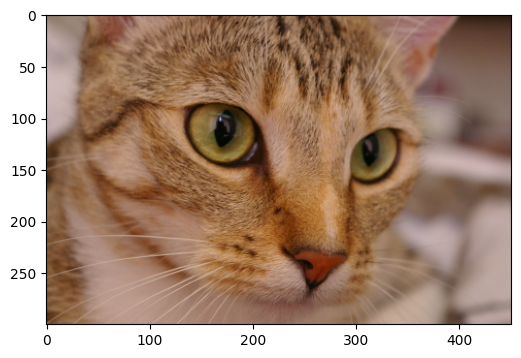

Image Classification using Global Context Vision Transformer
Author: Md Awsafur Rahman
Date created: 2023/10/30
Last modified: 2023/10/30
Description: Implementation and fine-tuning of Global Context Vision Transformer for image classification.

Setup
!pip install --upgrade keras_cv tensorflow
!pip install --upgrade keras
import keras
from keras_cv.layers import DropPath
from keras import ops
from keras import layers
import tensorflow as tf # only for dataloader
import tensorflow_datasets as tfds # for flower dataset
from skimage.data import chelsea
import matplotlib.pyplot as plt
import numpy as np
Introduction
In this notebook, we will utilize multi-backend Keras 3.0 to implement the GCViT: Global Context Vision Transformer paper, presented at ICML 2023 by A Hatamizadeh et al. The, we will fine-tune the model on the Flower dataset for image classification task, leveraging the official ImageNet pre-trained weights. A highlight of this notebook is its compatibility with multiple backends: TensorFlow, PyTorch, and JAX, showcasing the true potential of multi-backend Keras.
Motivation
Note: In this section we'll learn about the backstory of GCViT and try to understand why it is proposed.
- During recent years, Transformers have achieved dominance in Natural Language Processing (NLP) tasks and with the self-attention mechanism which allows for capturing both long and short-range information.
- Following this trend, Vision Transformer (ViT) proposed to utilize image patches as tokens in a gigantic architecture similar to encoder of the original Transformer.
- Despite the historic dominance of Convolutional Neural Network (CNN) in computer vision, ViT-based models have shown SOTA or competitive performance in various computer vision tasks.

- However, quadratic [
O(n^2)] computational complexity of self-attention and lack of multi-scale information makes it difficult for ViT to be considered as general-purpose architecture for Compute Vision tasks like segmentation and object detection where it requires dense prediction at the pixel level. - Swin Transformer has attempted to address the issues of ViT by proposing multi-resolution/hierarchical architectures in which the self-attention is computed in local windows and cross-window connections such as window shifting are used for modeling the interactions across different regions. But the limited receptive field of local windows can not capture long-range information, and cross-window-connection schemes such as window-shifting only cover a small neighborhood in the vicinity of each window. Also, it lacks inductive-bias that encourages certain translation invariance is still preferable for general-purpose visual modeling, particularly for the dense prediction tasks of object detection and semantic segmentation.


- To address above limitations, Global Context (GC) ViT network is proposed.
Architecture
Let's have a quick overview of our key components,
1. Stem/PatchEmbed: A stem/patchify layer processes images at the network’s beginning.
For this network, it creates patches/tokens and converts them into embeddings.
2. Level: It is the repetitive building block that extracts features using different
blocks.
3. Global Token Gen./FeatureExtraction: It generates global tokens/patches with
Depthwise-CNN, SqueezeAndExcitation (Squeeze-Excitation), CNN and
MaxPooling. So basically
it's a Feature Extractor.
4. Block: It is the repetitive module that applies attention to the features and
projects them to a certain dimension.
1. Local-MSA: Local Multi head Self Attention.
2. Global-MSA: Global Multi head Self Attention.
3. MLP: Linear layer that projects a vector to another dimension.
5. Downsample/ReduceSize: It is very similar to Global Token Gen. module except it
uses CNN instead of MaxPooling to downsample with additional Layer
Normalization modules.
6. Head: It is the module responsible for the classification task.
1. Pooling: It converts N x 2D features to N x 1D features.
2. Classifier: It processes N x 1D features to make a decision about class.
I've annotated the architecture figure to make it easier to digest,

Unit Blocks
Note: This blocks are used to build other modules throughout the paper. Most of the blocks are either borrowed from other work or modified version old work.
-
SqueezeAndExcitation: Squeeze-Excitation (SE) aka Bottleneck module acts sd kind of channel attention. It consits of AvgPooling, Dense/FullyConnected (FC)/Linear , GELU and Sigmoid module.
-
Fused-MBConv:This is similar to the one used in EfficientNetV2. It uses Depthwise-Conv, GELU, SqueezeAndExcitation, Conv, to extract feature with a resiudal connection. Note that, no new module is declared for this one, we simply applied corresponding modules directly.
-
ReduceSize: It is a CNN based downsample module which abvobe mentionedFused-MBConvmodule to extract feature, Strided Conv to simultaneously reduce spatial dimension and increse channelwise dimention of the features and finally LayerNormalization module to normalize features. In the paper/figure this module is referred as downsample module. I think it is mention worthy that SwniTransformer usedPatchMergingmodule instead ofReduceSizeto reduce the spatial dimention and increase channelwise dimension which uses fully-connected/dense/linear module. According to the GCViT paper, one of the purposes of usingReduceSizeis to add inductive bias through CNN module.
-
MLP:This is our very own Multi Layer Perceptron module. This a feed-forward/fully-connected/linear module which simply projects input to an arbitary dimension.
class SqueezeAndExcitation(layers.Layer):
"""Squeeze and excitation block.
Args:
output_dim: output features dimension, if `None` use same dim as input.
expansion: expansion ratio.
"""
def __init__(self, output_dim=None, expansion=0.25, **kwargs):
super().__init__(**kwargs)
self.expansion = expansion
self.output_dim = output_dim
def build(self, input_shape):
inp = input_shape[-1]
self.output_dim = self.output_dim or inp
self.avg_pool = layers.GlobalAvgPool2D(keepdims=True, name="avg_pool")
self.fc = [
layers.Dense(int(inp * self.expansion), use_bias=False, name="fc_0"),
layers.Activation("gelu", name="fc_1"),
layers.Dense(self.output_dim, use_bias=False, name="fc_2"),
layers.Activation("sigmoid", name="fc_3"),
]
super().build(input_shape)
def call(self, inputs, **kwargs):
x = self.avg_pool(inputs)
for layer in self.fc:
x = layer(x)
return x * inputs
class ReduceSize(layers.Layer):
"""Down-sampling block.
Args:
keepdims: if False spatial dim is reduced and channel dim is increased
"""
def __init__(self, keepdims=False, **kwargs):
super().__init__(**kwargs)
self.keepdims = keepdims
def build(self, input_shape):
embed_dim = input_shape[-1]
dim_out = embed_dim if self.keepdims else 2 * embed_dim
self.pad1 = layers.ZeroPadding2D(1, name="pad1")
self.pad2 = layers.ZeroPadding2D(1, name="pad2")
self.conv = [
layers.DepthwiseConv2D(
kernel_size=3, strides=1, padding="valid", use_bias=False, name="conv_0"
),
layers.Activation("gelu", name="conv_1"),
SqueezeAndExcitation(name="conv_2"),
layers.Conv2D(
embed_dim,
kernel_size=1,
strides=1,
padding="valid",
use_bias=False,
name="conv_3",
),
]
self.reduction = layers.Conv2D(
dim_out,
kernel_size=3,
strides=2,
padding="valid",
use_bias=False,
name="reduction",
)
self.norm1 = layers.LayerNormalization(
-1, 1e-05, name="norm1"
) # eps like PyTorch
self.norm2 = layers.LayerNormalization(-1, 1e-05, name="norm2")
def call(self, inputs, **kwargs):
x = self.norm1(inputs)
xr = self.pad1(x)
for layer in self.conv:
xr = layer(xr)
x = x + xr
x = self.pad2(x)
x = self.reduction(x)
x = self.norm2(x)
return x
class MLP(layers.Layer):
"""Multi-Layer Perceptron (MLP) block.
Args:
hidden_features: hidden features dimension.
out_features: output features dimension.
activation: activation function.
dropout: dropout rate.
"""
def __init__(
self,
hidden_features=None,
out_features=None,
activation="gelu",
dropout=0.0,
**kwargs,
):
super().__init__(**kwargs)
self.hidden_features = hidden_features
self.out_features = out_features
self.activation = activation
self.dropout = dropout
def build(self, input_shape):
self.in_features = input_shape[-1]
self.hidden_features = self.hidden_features or self.in_features
self.out_features = self.out_features or self.in_features
self.fc1 = layers.Dense(self.hidden_features, name="fc1")
self.act = layers.Activation(self.activation, name="act")
self.fc2 = layers.Dense(self.out_features, name="fc2")
self.drop1 = layers.Dropout(self.dropout, name="drop1")
self.drop2 = layers.Dropout(self.dropout, name="drop2")
def call(self, inputs, **kwargs):
x = self.fc1(inputs)
x = self.act(x)
x = self.drop1(x)
x = self.fc2(x)
x = self.drop2(x)
return x
Stem
Notes: In the code, this module is referred to as PatchEmbed but on paper, it is referred to as Stem.
In the model, we have first used patch_embed module. Let's try to understand this
module. As we can see from the call method,
1. This module first pads input
2. Then uses convolutions to extract patches with embeddings.
3. Finally, uses ReduceSize module to first extract features with convolution but
neither reduces spatial dimension nor increases spatial dimension.
4. One important point to notice, unlike ViT or SwinTransformer, GCViT
creates overlapping patches. We can notice that from the code,
Conv2D(self.embed_dim, kernel_size=3, strides=2, name='proj'). If we wanted
non-overlapping patches then we would've used the same kernel_size and stride.
5. This module reduces the spatial dimension of input by 4x.
Summary: image → padding → convolution → (feature_extract + downsample)
class PatchEmbed(layers.Layer):
"""Patch embedding block.
Args:
embed_dim: feature size dimension.
"""
def __init__(self, embed_dim, **kwargs):
super().__init__(**kwargs)
self.embed_dim = embed_dim
def build(self, input_shape):
self.pad = layers.ZeroPadding2D(1, name="pad")
self.proj = layers.Conv2D(self.embed_dim, 3, 2, name="proj")
self.conv_down = ReduceSize(keepdims=True, name="conv_down")
def call(self, inputs, **kwargs):
x = self.pad(inputs)
x = self.proj(x)
x = self.conv_down(x)
return x
Global Token Gen.
Notes: It is one of the two CNN modules that is used to imppose inductive bias.
As we can see from above cell, in the level we have first used to_q_global/Global
Token Gen./FeatureExtraction. Let's try to understand how it works,
- This module is series of
FeatureExtractmodule, according to paper we need to repeat this moduleKtimes, whereK = log2(H/h),H = feature_map_height,W = feature_map_width. FeatureExtraction:This layer is very similar toReduceSizemodule except it uses MaxPooling module to reduce the dimension, it doesn't increse feature dimension (channelsie) and it doesn't uses LayerNormalizaton. This module is used to inGenerate Token Gen.module repeatedly to generte global tokens for global-context-attention.- One important point to notice from the figure is that, global tokens is shared across the whole image which means we use only one global window for all local tokens in a image. This makes the computation very efficient.
- For input feature map with shape
(B, H, W, C), we'll get output shape(B, h, w, C). If we copy these global tokens for totalMlocal windows in an image where,M = (H x W)/(h x w) = num_window, then output shape:(B * M, h, w, C)."
Summary: This module is used to
resizethe image to fit window.

class FeatureExtraction(layers.Layer):
"""Feature extraction block.
Args:
keepdims: bool argument for maintaining the resolution.
"""
def __init__(self, keepdims=False, **kwargs):
super().__init__(**kwargs)
self.keepdims = keepdims
def build(self, input_shape):
embed_dim = input_shape[-1]
self.pad1 = layers.ZeroPadding2D(1, name="pad1")
self.pad2 = layers.ZeroPadding2D(1, name="pad2")
self.conv = [
layers.DepthwiseConv2D(3, 1, use_bias=False, name="conv_0"),
layers.Activation("gelu", name="conv_1"),
SqueezeAndExcitation(name="conv_2"),
layers.Conv2D(embed_dim, 1, 1, use_bias=False, name="conv_3"),
]
if not self.keepdims:
self.pool = layers.MaxPool2D(3, 2, name="pool")
super().build(input_shape)
def call(self, inputs, **kwargs):
x = inputs
xr = self.pad1(x)
for layer in self.conv:
xr = layer(xr)
x = x + xr
if not self.keepdims:
x = self.pool(self.pad2(x))
return x
class GlobalQueryGenerator(layers.Layer):
"""Global query generator.
Args:
keepdims: to keep the dimension of FeatureExtraction layer.
For instance, repeating log(56/7) = 3 blocks, with input
window dimension 56 and output window dimension 7 at down-sampling
ratio 2. Please check Fig.5 of GC ViT paper for details.
"""
def __init__(self, keepdims=False, **kwargs):
super().__init__(**kwargs)
self.keepdims = keepdims
def build(self, input_shape):
self.to_q_global = [
FeatureExtraction(keepdims, name=f"to_q_global_{i}")
for i, keepdims in enumerate(self.keepdims)
]
super().build(input_shape)
def call(self, inputs, **kwargs):
x = inputs
for layer in self.to_q_global:
x = layer(x)
return x
Attention
Notes: This is the core contribution of the paper.
As we can see from the call method,
1. WindowAttention module applies both local and global window attention
depending on global_query parameter.
- First it converts input features into
query, key, valuefor local attention andkey, valuefor global attention. For global attention, it takes global query fromGlobal Token Gen.. One thing to notice from the code is that we divide the features or embed_dim among all the heads of Transformer to reduce the computation.qkv = tf.reshape(qkv, [B_, N, self.qkv_size, self.num_heads, C // self.num_heads]) - Before sending query, key and value for attention, global token goes through an
important process. Same global tokens or one global window gets copied for all the local
windows to increase efficiency.
q_global = tf.repeat(q_global, repeats=B_//B, axis=0), hereB_//Bmeansnum_windowsin a image. - Then simply applies
local-window-self-attentionorglobal-window-attentiondepending onglobal_queryparameter. One thing to notice from the code is that we are adding relative-positional-embedding with the attention mask instead of the patch embedding.attn = attn + relative_position_bias[tf.newaxis,]
- Now, let's think for a bit and try to understand what is happening here. Let's focus
on the figure below. We can see from the left, that in the local-attention the
query is local and it's limited to the local window (red square border) hence we
don't have access to long-range information. But on the right that due to global
query we're now not limited to local-windows (blue square border) and we have
access to long-range information.

- In ViT we compare (attention) image-tokens with image-tokens, in
SwinTransformer we compare window-tokens with window-tokens but in GCViT we
compare image-tokens with window-tokens. But now you may ask, how can compare(attention)
image-tokens with window-tokens even after image-tokens have larger dimensions than
window-tokens? (from above figure image-tokens have shape
(1, 8, 8, 3)and window-tokens have shape(1, 4, 4, 3)). Yes, you are right we can't directly compare them hence we resize image-tokens to fit window-tokens withGlobal Token Gen./FeatureExtractionCNN module. The following table should give you a clear comparison,
| Model | Query Tokens | Key-Value Tokens | Attention Type | Attention Coverage |
|---|---|---|---|---|
| ViT | image | image | self-attention | global |
| SwinTransformer | window | window | self-attention | local |
| GCViT | resized-image | window | image-window attention | global |
class WindowAttention(layers.Layer):
"""Local window attention.
This implementation was proposed by
[Liu et al., 2021](https://arxiv.org/abs/2103.14030) in SwinTransformer.
Args:
window_size: window size.
num_heads: number of attention head.
global_query: if the input contains global_query
qkv_bias: bool argument for query, key, value learnable bias.
qk_scale: bool argument to scaling query, key.
attention_dropout: attention dropout rate.
projection_dropout: output dropout rate.
"""
def __init__(
self,
window_size,
num_heads,
global_query,
qkv_bias=True,
qk_scale=None,
attention_dropout=0.0,
projection_dropout=0.0,
**kwargs,
):
super().__init__(**kwargs)
window_size = (window_size, window_size)
self.window_size = window_size
self.num_heads = num_heads
self.global_query = global_query
self.qkv_bias = qkv_bias
self.qk_scale = qk_scale
self.attention_dropout = attention_dropout
self.projection_dropout = projection_dropout
def build(self, input_shape):
embed_dim = input_shape[0][-1]
head_dim = embed_dim // self.num_heads
self.scale = self.qk_scale or head_dim**-0.5
self.qkv_size = 3 - int(self.global_query)
self.qkv = layers.Dense(
embed_dim * self.qkv_size, use_bias=self.qkv_bias, name="qkv"
)
self.relative_position_bias_table = self.add_weight(
name="relative_position_bias_table",
shape=[
(2 * self.window_size[0] - 1) * (2 * self.window_size[1] - 1),
self.num_heads,
],
initializer=keras.initializers.TruncatedNormal(stddev=0.02),
trainable=True,
dtype=self.dtype,
)
self.attn_drop = layers.Dropout(self.attention_dropout, name="attn_drop")
self.proj = layers.Dense(embed_dim, name="proj")
self.proj_drop = layers.Dropout(self.projection_dropout, name="proj_drop")
self.softmax = layers.Activation("softmax", name="softmax")
super().build(input_shape)
def get_relative_position_index(self):
coords_h = ops.arange(self.window_size[0])
coords_w = ops.arange(self.window_size[1])
coords = ops.stack(ops.meshgrid(coords_h, coords_w, indexing="ij"), axis=0)
coords_flatten = ops.reshape(coords, [2, -1])
relative_coords = coords_flatten[:, :, None] - coords_flatten[:, None, :]
relative_coords = ops.transpose(relative_coords, axes=[1, 2, 0])
relative_coords_xx = relative_coords[:, :, 0] + self.window_size[0] - 1
relative_coords_yy = relative_coords[:, :, 1] + self.window_size[1] - 1
relative_coords_xx = relative_coords_xx * (2 * self.window_size[1] - 1)
relative_position_index = relative_coords_xx + relative_coords_yy
return relative_position_index
def call(self, inputs, **kwargs):
if self.global_query:
inputs, q_global = inputs
B = ops.shape(q_global)[0] # B, N, C
else:
inputs = inputs[0]
B_, N, C = ops.shape(inputs) # B*num_window, num_tokens, channels
qkv = self.qkv(inputs)
qkv = ops.reshape(
qkv, [B_, N, self.qkv_size, self.num_heads, C // self.num_heads]
)
qkv = ops.transpose(qkv, [2, 0, 3, 1, 4])
if self.global_query:
k, v = ops.split(
qkv, indices_or_sections=2, axis=0
) # for unknown shame num=None will throw error
q_global = ops.repeat(
q_global, repeats=B_ // B, axis=0
) # num_windows = B_//B => q_global same for all windows in a img
q = ops.reshape(q_global, [B_, N, self.num_heads, C // self.num_heads])
q = ops.transpose(q, axes=[0, 2, 1, 3])
else:
q, k, v = ops.split(qkv, indices_or_sections=3, axis=0)
q = ops.squeeze(q, axis=0)
k = ops.squeeze(k, axis=0)
v = ops.squeeze(v, axis=0)
q = q * self.scale
attn = q @ ops.transpose(k, axes=[0, 1, 3, 2])
relative_position_bias = ops.take(
self.relative_position_bias_table,
ops.reshape(self.get_relative_position_index(), [-1]),
)
relative_position_bias = ops.reshape(
relative_position_bias,
[
self.window_size[0] * self.window_size[1],
self.window_size[0] * self.window_size[1],
-1,
],
)
relative_position_bias = ops.transpose(relative_position_bias, axes=[2, 0, 1])
attn = attn + relative_position_bias[None,]
attn = self.softmax(attn)
attn = self.attn_drop(attn)
x = ops.transpose((attn @ v), axes=[0, 2, 1, 3])
x = ops.reshape(x, [B_, N, C])
x = self.proj_drop(self.proj(x))
return x
Block
Notes: This module doesn't have any Convolutional module.
In the level second module that we have used is block. Let's try to understand how it
works. As we can see from the call method,
1. Block module takes either only feature_maps for local attention or additional global
query for global attention.
2. Before sending feature maps for attention, this module converts batch feature maps
to batch windows as we'll be applying Window Attention.
3. Then we send batch batch windows for attention.
4. After attention has been applied we revert batch windows to batch feature maps.
5. Before sending the attention to applied features for output, this module applies
Stochastic Depth regularization in the residual connection. Also, before applying
Stochastic Depth it rescales the input with trainable parameters. Note that, this
Stochastic Depth block hasn't been shown in the figure of the paper.

Window
In the block module, we have created windows before and after applying attention.
Let's try to understand how we're creating windows,
* Following module converts feature maps (B, H, W, C) to stacked windows
(B x H/h x W/w, h, w, C) → (num_windows_batch, window_size, window_size, channel)
* This module uses reshape & transpose to create these windows out of image instead
of iterating over them.
class Block(layers.Layer):
"""GCViT block.
Args:
window_size: window size.
num_heads: number of attention head.
global_query: apply global window attention
mlp_ratio: MLP ratio.
qkv_bias: bool argument for query, key, value learnable bias.
qk_scale: bool argument to scaling query, key.
drop: dropout rate.
attention_dropout: attention dropout rate.
path_drop: drop path rate.
activation: activation function.
layer_scale: layer scaling coefficient.
"""
def __init__(
self,
window_size,
num_heads,
global_query,
mlp_ratio=4.0,
qkv_bias=True,
qk_scale=None,
dropout=0.0,
attention_dropout=0.0,
path_drop=0.0,
activation="gelu",
layer_scale=None,
**kwargs,
):
super().__init__(**kwargs)
self.window_size = window_size
self.num_heads = num_heads
self.global_query = global_query
self.mlp_ratio = mlp_ratio
self.qkv_bias = qkv_bias
self.qk_scale = qk_scale
self.dropout = dropout
self.attention_dropout = attention_dropout
self.path_drop = path_drop
self.activation = activation
self.layer_scale = layer_scale
def build(self, input_shape):
B, H, W, C = input_shape[0]
self.norm1 = layers.LayerNormalization(-1, 1e-05, name="norm1")
self.attn = WindowAttention(
window_size=self.window_size,
num_heads=self.num_heads,
global_query=self.global_query,
qkv_bias=self.qkv_bias,
qk_scale=self.qk_scale,
attention_dropout=self.attention_dropout,
projection_dropout=self.dropout,
name="attn",
)
self.drop_path1 = DropPath(self.path_drop)
self.drop_path2 = DropPath(self.path_drop)
self.norm2 = layers.LayerNormalization(-1, 1e-05, name="norm2")
self.mlp = MLP(
hidden_features=int(C * self.mlp_ratio),
dropout=self.dropout,
activation=self.activation,
name="mlp",
)
if self.layer_scale is not None:
self.gamma1 = self.add_weight(
name="gamma1",
shape=[C],
initializer=keras.initializers.Constant(self.layer_scale),
trainable=True,
dtype=self.dtype,
)
self.gamma2 = self.add_weight(
name="gamma2",
shape=[C],
initializer=keras.initializers.Constant(self.layer_scale),
trainable=True,
dtype=self.dtype,
)
else:
self.gamma1 = 1.0
self.gamma2 = 1.0
self.num_windows = int(H // self.window_size) * int(W // self.window_size)
super().build(input_shape)
def call(self, inputs, **kwargs):
if self.global_query:
inputs, q_global = inputs
else:
inputs = inputs[0]
B, H, W, C = ops.shape(inputs)
x = self.norm1(inputs)
# create windows and concat them in batch axis
x = self.window_partition(x, self.window_size) # (B_, win_h, win_w, C)
# flatten patch
x = ops.reshape(x, [-1, self.window_size * self.window_size, C])
# attention
if self.global_query:
x = self.attn([x, q_global])
else:
x = self.attn([x])
# reverse window partition
x = self.window_reverse(x, self.window_size, H, W, C)
# FFN
x = inputs + self.drop_path1(x * self.gamma1)
x = x + self.drop_path2(self.gamma2 * self.mlp(self.norm2(x)))
return x
def window_partition(self, x, window_size):
"""
Args:
x: (B, H, W, C)
window_size: window size
Returns:
local window features (num_windows*B, window_size, window_size, C)
"""
B, H, W, C = ops.shape(x)
x = ops.reshape(
x,
[
-1,
H // window_size,
window_size,
W // window_size,
window_size,
C,
],
)
x = ops.transpose(x, axes=[0, 1, 3, 2, 4, 5])
windows = ops.reshape(x, [-1, window_size, window_size, C])
return windows
def window_reverse(self, windows, window_size, H, W, C):
"""
Args:
windows: local window features (num_windows*B, window_size, window_size, C)
window_size: Window size
H: Height of image
W: Width of image
C: Channel of image
Returns:
x: (B, H, W, C)
"""
x = ops.reshape(
windows,
[
-1,
H // window_size,
W // window_size,
window_size,
window_size,
C,
],
)
x = ops.transpose(x, axes=[0, 1, 3, 2, 4, 5])
x = ops.reshape(x, [-1, H, W, C])
return x
Level
Note: This module has both Transformer and CNN modules.
In the model, the second module that we have used is level. Let's try to understand
this module. As we can see from the call method,
1. First it creates global_token with a series of FeatureExtraction modules. As
we'll see
later that FeatureExtraction is nothing but a simple CNN based module.
2. Then it uses series ofBlock modules to apply local or global window attention
depending on depth level.
3. Finally, it uses ReduceSize to reduce the dimension of contextualized features.
Summary: feature_map → global_token → local/global window attention → dowsample

class Level(layers.Layer):
"""GCViT level.
Args:
depth: number of layers in each stage.
num_heads: number of heads in each stage.
window_size: window size in each stage.
keepdims: dims to keep in FeatureExtraction.
downsample: bool argument for down-sampling.
mlp_ratio: MLP ratio.
qkv_bias: bool argument for query, key, value learnable bias.
qk_scale: bool argument to scaling query, key.
drop: dropout rate.
attention_dropout: attention dropout rate.
path_drop: drop path rate.
layer_scale: layer scaling coefficient.
"""
def __init__(
self,
depth,
num_heads,
window_size,
keepdims,
downsample=True,
mlp_ratio=4.0,
qkv_bias=True,
qk_scale=None,
dropout=0.0,
attention_dropout=0.0,
path_drop=0.0,
layer_scale=None,
**kwargs,
):
super().__init__(**kwargs)
self.depth = depth
self.num_heads = num_heads
self.window_size = window_size
self.keepdims = keepdims
self.downsample = downsample
self.mlp_ratio = mlp_ratio
self.qkv_bias = qkv_bias
self.qk_scale = qk_scale
self.dropout = dropout
self.attention_dropout = attention_dropout
self.path_drop = path_drop
self.layer_scale = layer_scale
def build(self, input_shape):
path_drop = (
[self.path_drop] * self.depth
if not isinstance(self.path_drop, list)
else self.path_drop
)
self.blocks = [
Block(
window_size=self.window_size,
num_heads=self.num_heads,
global_query=bool(i % 2),
mlp_ratio=self.mlp_ratio,
qkv_bias=self.qkv_bias,
qk_scale=self.qk_scale,
dropout=self.dropout,
attention_dropout=self.attention_dropout,
path_drop=path_drop[i],
layer_scale=self.layer_scale,
name=f"blocks_{i}",
)
for i in range(self.depth)
]
self.down = ReduceSize(keepdims=False, name="downsample")
self.q_global_gen = GlobalQueryGenerator(self.keepdims, name="q_global_gen")
super().build(input_shape)
def call(self, inputs, **kwargs):
x = inputs
q_global = self.q_global_gen(x) # shape: (B, win_size, win_size, C)
for i, blk in enumerate(self.blocks):
if i % 2:
x = blk([x, q_global]) # shape: (B, H, W, C)
else:
x = blk([x]) # shape: (B, H, W, C)
if self.downsample:
x = self.down(x) # shape: (B, H//2, W//2, 2*C)
return x
Model
Let's directly jump to the model. As we can see from the call method,
1. It creates patch embeddings from an image. This layer doesn't flattens these
embeddings which means output of this module will be
(batch, height/window_size, width/window_size, embed_dim) instead of
(batch, height x width/window_size^2, embed_dim).
2. Then it applies Dropout module which randomly sets input units to 0.
3. It passes these embeddings to series of Level modules which we are calling level
where,
1. Global token is generated
1. Both local & global attention is applied
1. Finally downsample is applied.
4. So, output after n number of levels, shape: (batch, width/window_size x 2^{n-1},
width/window_size x 2^{n-1}, embed_dim x 2^{n-1}). In the last layer,
paper doesn't use downsample and increase channels.
5. Output of above layer is normalized using LayerNormalization module.
6. In the head, 2D features are converted to 1D features with Pooling module. Output
shape after this module is (batch, embed_dim x 2^{n-1})
7. Finally, pooled features are sent to Dense/Linear module for classification.
Sumamry: image → (patchs + embedding) → dropout → (attention + feature extraction) → normalizaion → pooling → classify
class GCViT(keras.Model):
"""GCViT model.
Args:
window_size: window size in each stage.
embed_dim: feature size dimension.
depths: number of layers in each stage.
num_heads: number of heads in each stage.
drop_rate: dropout rate.
mlp_ratio: MLP ratio.
qkv_bias: bool argument for query, key, value learnable bias.
qk_scale: bool argument to scaling query, key.
attention_dropout: attention dropout rate.
path_drop: drop path rate.
layer_scale: layer scaling coefficient.
num_classes: number of classes.
head_activation: activation function for head.
"""
def __init__(
self,
window_size,
embed_dim,
depths,
num_heads,
drop_rate=0.0,
mlp_ratio=3.0,
qkv_bias=True,
qk_scale=None,
attention_dropout=0.0,
path_drop=0.1,
layer_scale=None,
num_classes=1000,
head_activation="softmax",
**kwargs,
):
super().__init__(**kwargs)
self.window_size = window_size
self.embed_dim = embed_dim
self.depths = depths
self.num_heads = num_heads
self.drop_rate = drop_rate
self.mlp_ratio = mlp_ratio
self.qkv_bias = qkv_bias
self.qk_scale = qk_scale
self.attention_dropout = attention_dropout
self.path_drop = path_drop
self.layer_scale = layer_scale
self.num_classes = num_classes
self.head_activation = head_activation
self.patch_embed = PatchEmbed(embed_dim=embed_dim, name="patch_embed")
self.pos_drop = layers.Dropout(drop_rate, name="pos_drop")
path_drops = np.linspace(0.0, path_drop, sum(depths))
keepdims = [(0, 0, 0), (0, 0), (1,), (1,)]
self.levels = []
for i in range(len(depths)):
path_drop = path_drops[sum(depths[:i]) : sum(depths[: i + 1])].tolist()
level = Level(
depth=depths[i],
num_heads=num_heads[i],
window_size=window_size[i],
keepdims=keepdims[i],
downsample=(i < len(depths) - 1),
mlp_ratio=mlp_ratio,
qkv_bias=qkv_bias,
qk_scale=qk_scale,
dropout=drop_rate,
attention_dropout=attention_dropout,
path_drop=path_drop,
layer_scale=layer_scale,
name=f"levels_{i}",
)
self.levels.append(level)
self.norm = layers.LayerNormalization(axis=-1, epsilon=1e-05, name="norm")
self.pool = layers.GlobalAvgPool2D(name="pool")
self.head = layers.Dense(num_classes, name="head", activation=head_activation)
def build(self, input_shape):
super().build(input_shape)
self.built = True
def call(self, inputs, **kwargs):
x = self.patch_embed(inputs) # shape: (B, H, W, C)
x = self.pos_drop(x)
for level in self.levels:
x = level(x) # shape: (B, H_, W_, C_)
x = self.norm(x)
x = self.pool(x) # shape: (B, C__)
x = self.head(x)
return x
def build_graph(self, input_shape=(224, 224, 3)):
"""
ref: https://www.kaggle.com/code/ipythonx/tf-hybrid-efficientnet-swin-transformer-gradcam
"""
x = keras.Input(shape=input_shape)
return keras.Model(inputs=[x], outputs=self.call(x), name=self.name)
def summary(self, input_shape=(224, 224, 3)):
return self.build_graph(input_shape).summary()
Build Model
- Let's build a complete model with all the modules that we've explained above. We'll build GCViT-XXTiny model with the configuration mentioned in the paper.
- Also we'll load the ported official pre-trained weights and try for some predictions.
# Model Configs
config = {
"window_size": (7, 7, 14, 7),
"embed_dim": 64,
"depths": (2, 2, 6, 2),
"num_heads": (2, 4, 8, 16),
"mlp_ratio": 3.0,
"path_drop": 0.2,
}
ckpt_link = (
"https://github.com/awsaf49/gcvit-tf/releases/download/v1.1.6/gcvitxxtiny.keras"
)
# Build Model
model = GCViT(**config)
inp = ops.array(np.random.uniform(size=(1, 224, 224, 3)))
out = model(inp)
# Load Weights
ckpt_path = keras.utils.get_file(ckpt_link.split("/")[-1], ckpt_link)
model.load_weights(ckpt_path)
# Summary
model.summary((224, 224, 3))
Downloading data from https://github.com/awsaf49/gcvit-tf/releases/download/v1.1.6/gcvitxxtiny.keras
48767519/48767519 ━━━━━━━━━━━━━━━━━━━━ 0s 0us/step
Model: "gc_vi_t"
┏━━━━━━━━━━━━━━━━━━━━━━━━━━━━━━━━━━━━┳━━━━━━━━━━━━━━━━━━━━━━━━━━━━━━━┳━━━━━━━━━━━━━┓ ┃ Layer (type) ┃ Output Shape ┃ Param # ┃ ┡━━━━━━━━━━━━━━━━━━━━━━━━━━━━━━━━━━━━╇━━━━━━━━━━━━━━━━━━━━━━━━━━━━━━━╇━━━━━━━━━━━━━┩ │ input_layer (InputLayer) │ (None, 224, 224, 3) │ 0 │ ├────────────────────────────────────┼───────────────────────────────┼─────────────┤ │ patch_embed (PatchEmbed) │ (None, 56, 56, 64) │ 45,632 │ ├────────────────────────────────────┼───────────────────────────────┼─────────────┤ │ pos_drop (Dropout) │ (None, 56, 56, 64) │ 0 │ ├────────────────────────────────────┼───────────────────────────────┼─────────────┤ │ levels_0 (Level) │ (None, 28, 28, 128) │ 180,964 │ ├────────────────────────────────────┼───────────────────────────────┼─────────────┤ │ levels_1 (Level) │ (None, 14, 14, 256) │ 688,456 │ ├────────────────────────────────────┼───────────────────────────────┼─────────────┤ │ levels_2 (Level) │ (None, 7, 7, 512) │ 5,170,608 │ ├────────────────────────────────────┼───────────────────────────────┼─────────────┤ │ levels_3 (Level) │ (None, 7, 7, 512) │ 5,395,744 │ ├────────────────────────────────────┼───────────────────────────────┼─────────────┤ │ norm (LayerNormalization) │ (None, 7, 7, 512) │ 1,024 │ ├────────────────────────────────────┼───────────────────────────────┼─────────────┤ │ pool (GlobalAveragePooling2D) │ (None, 512) │ 0 │ ├────────────────────────────────────┼───────────────────────────────┼─────────────┤ │ head (Dense) │ (None, 1000) │ 513,000 │ └────────────────────────────────────┴───────────────────────────────┴─────────────┘
Total params: 11,995,428 (45.76 MB)
Trainable params: 11,995,428 (45.76 MB)
Non-trainable params: 0 (0.00 B)
Sanity check for Pre-Trained Weights
img = keras.applications.imagenet_utils.preprocess_input(
chelsea(), mode="torch"
) # Chelsea the cat
img = ops.image.resize(img, (224, 224))[None,] # resize & create batch
pred = model(img)
pred_dec = keras.applications.imagenet_utils.decode_predictions(pred)[0]
print("\n# Image:")
plt.figure(figsize=(6, 6))
plt.imshow(chelsea())
plt.show()
print()
print("# Prediction (Top 5):")
for i in range(5):
print("{:<12} : {:0.2f}".format(pred_dec[i][1], pred_dec[i][2]))
Downloading data from https://storage.googleapis.com/download.tensorflow.org/data/imagenet_class_index.json
35363/35363 ━━━━━━━━━━━━━━━━━━━━ 0s 0us/step
# Image:

# Prediction (Top 5):
Egyptian_cat : 0.72
tiger_cat : 0.04
tabby : 0.03
crossword_puzzle : 0.01
panpipe : 0.00
Fine-tune GCViT Model
In the following cells, we will fine-tune GCViT model on Flower Dataset which
consists 104 classes.
Configs
# Model
IMAGE_SIZE = (224, 224)
# Hyper Params
BATCH_SIZE = 32
EPOCHS = 5
# Dataset
CLASSES = [
"dandelion",
"daisy",
"tulips",
"sunflowers",
"roses",
] # don't change the order
# Other constants
MEAN = 255 * np.array([0.485, 0.456, 0.406], dtype="float32") # imagenet mean
STD = 255 * np.array([0.229, 0.224, 0.225], dtype="float32") # imagenet std
AUTO = tf.data.AUTOTUNE
Data Loader
def make_dataset(dataset: tf.data.Dataset, train: bool, image_size: int = IMAGE_SIZE):
def preprocess(image, label):
# for training, do augmentation
if train:
if tf.random.uniform(shape=[]) > 0.5:
image = tf.image.flip_left_right(image)
image = tf.image.resize(image, size=image_size, method="bicubic")
image = (image - MEAN) / STD # normalization
return image, label
if train:
dataset = dataset.shuffle(BATCH_SIZE * 10)
return dataset.map(preprocess, AUTO).batch(BATCH_SIZE).prefetch(AUTO)
Flower Dataset
train_dataset, val_dataset = tfds.load(
"tf_flowers",
split=["train[:90%]", "train[90%:]"],
as_supervised=True,
try_gcs=False, # gcs_path is necessary for tpu,
)
train_dataset = make_dataset(train_dataset, True)
val_dataset = make_dataset(val_dataset, False)
Downloading and preparing dataset 218.21 MiB (download: 218.21 MiB, generated: 221.83 MiB, total: 440.05 MiB) to /root/tensorflow_datasets/tf_flowers/3.0.1...
Dl Completed...: 0%| | 0/5 [00:00<?, ? file/s]
Dataset tf_flowers downloaded and prepared to /root/tensorflow_datasets/tf_flowers/3.0.1. Subsequent calls will reuse this data.
Re-Build Model for Flower Dataset
# Re-Build Model
model = GCViT(**config, num_classes=104)
inp = ops.array(np.random.uniform(size=(1, 224, 224, 3)))
out = model(inp)
# Load Weights
ckpt_path = keras.utils.get_file(ckpt_link.split("/")[-1], ckpt_link)
model.load_weights(ckpt_path, skip_mismatch=True)
model.compile(
loss="sparse_categorical_crossentropy", optimizer="adam", metrics=["accuracy"]
)
/usr/local/lib/python3.10/dist-packages/keras/src/saving/saving_lib.py:269: UserWarning: A total of 1 objects could not be loaded. Example error message for object <Dense name=head, built=True>:
Layer 'head' expected 2 variables, but received 0 variables during loading. Expected: ['kernel', 'bias']
List of objects that could not be loaded:
[<Dense name=head, built=True>]
warnings.warn(msg)
Training
history = model.fit(
train_dataset, validation_data=val_dataset, epochs=EPOCHS, verbose=1
)
Epoch 1/5
104/104 ━━━━━━━━━━━━━━━━━━━━ 153s 581ms/step - accuracy: 0.5140 - loss: 1.4615 - val_accuracy: 0.8828 - val_loss: 0.3485
Epoch 2/5
104/104 ━━━━━━━━━━━━━━━━━━━━ 7s 69ms/step - accuracy: 0.8775 - loss: 0.3437 - val_accuracy: 0.8828 - val_loss: 0.3508
Epoch 3/5
104/104 ━━━━━━━━━━━━━━━━━━━━ 7s 68ms/step - accuracy: 0.8937 - loss: 0.2918 - val_accuracy: 0.9019 - val_loss: 0.2953
Epoch 4/5
104/104 ━━━━━━━━━━━━━━━━━━━━ 7s 68ms/step - accuracy: 0.9232 - loss: 0.2397 - val_accuracy: 0.9183 - val_loss: 0.2212
Epoch 5/5
104/104 ━━━━━━━━━━━━━━━━━━━━ 7s 68ms/step - accuracy: 0.9456 - loss: 0.1645 - val_accuracy: 0.9210 - val_loss: 0.2897